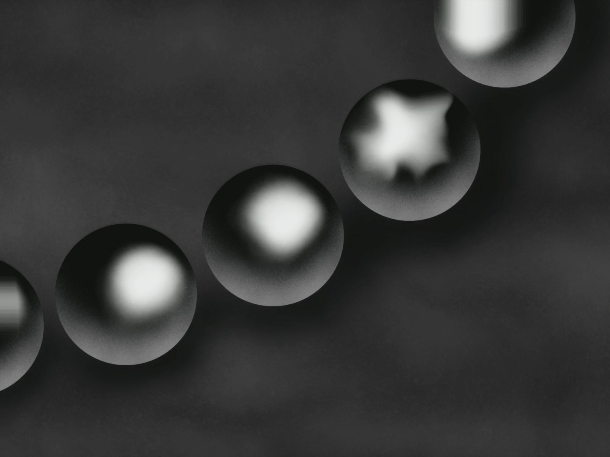
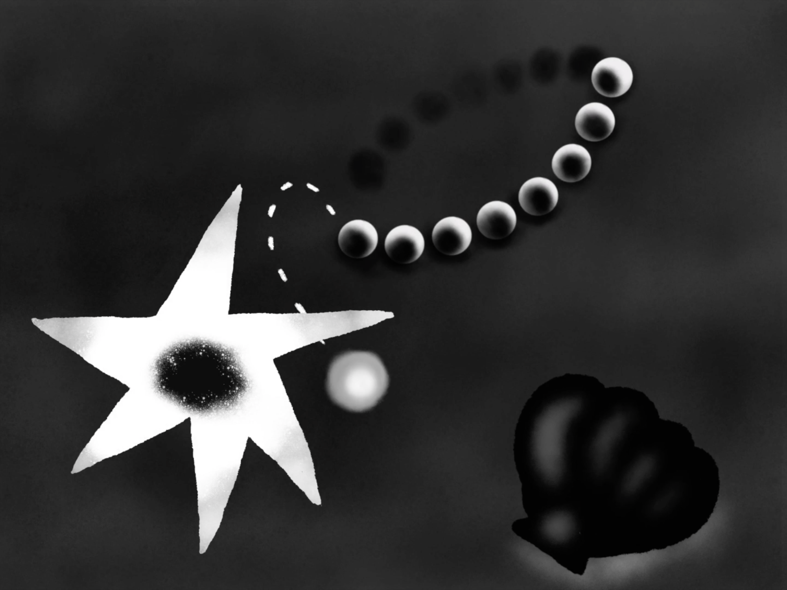
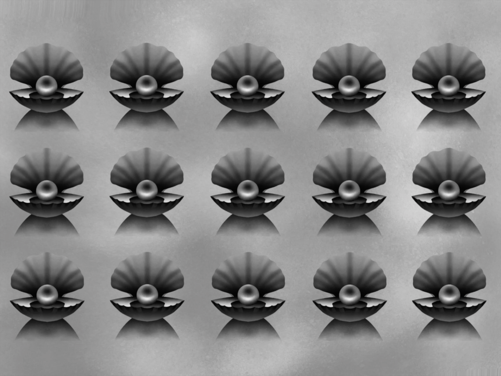
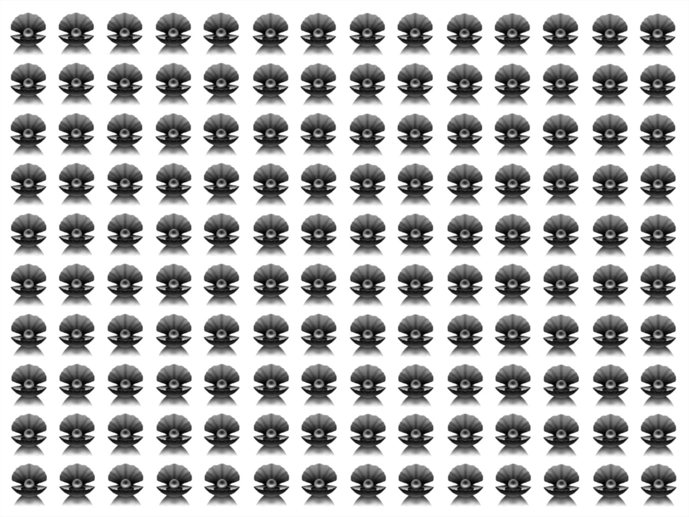
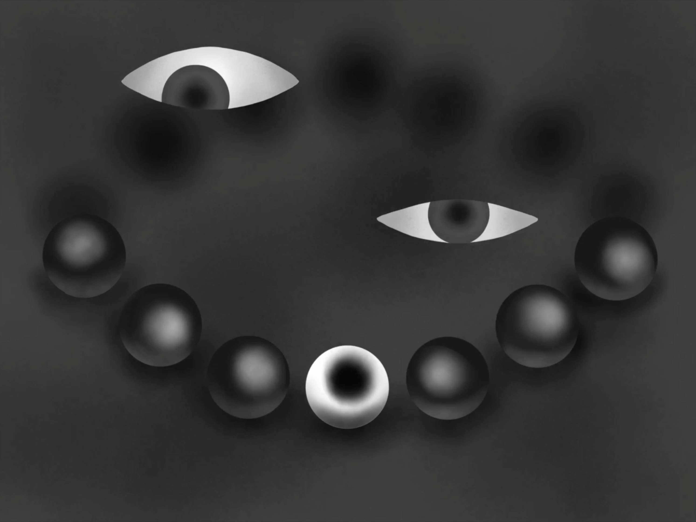
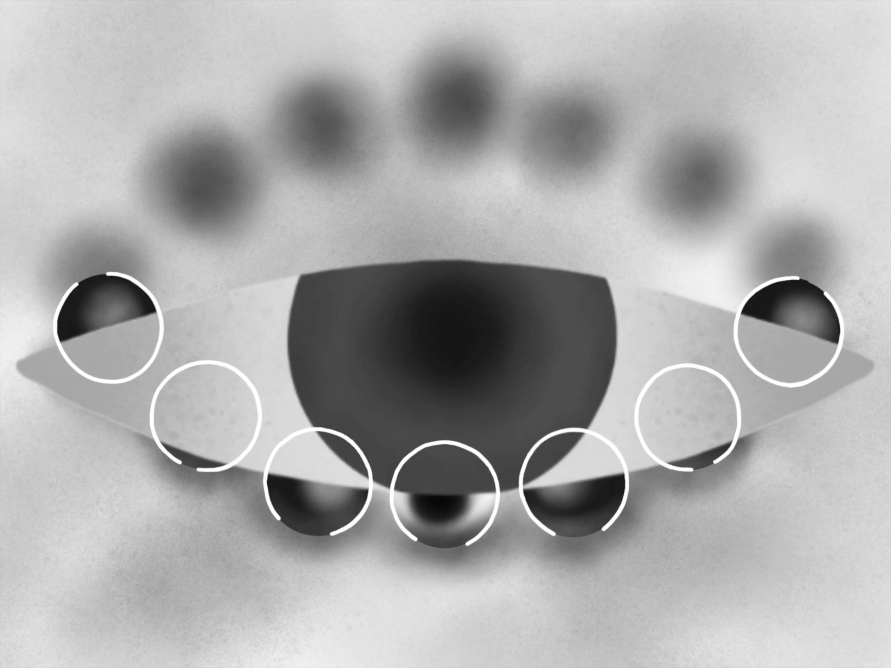
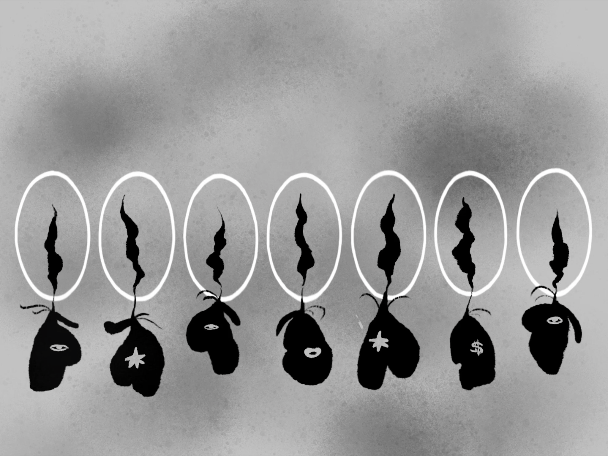
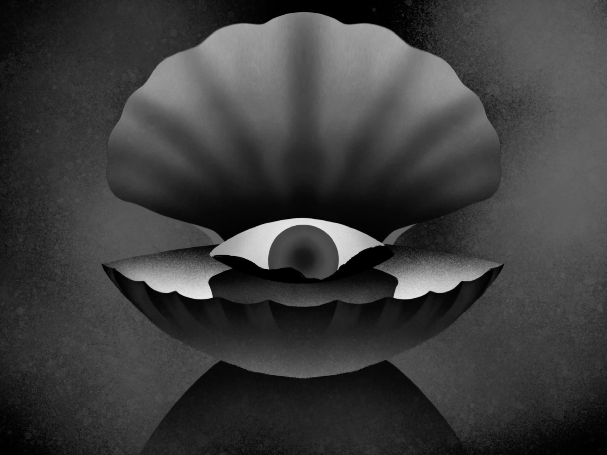
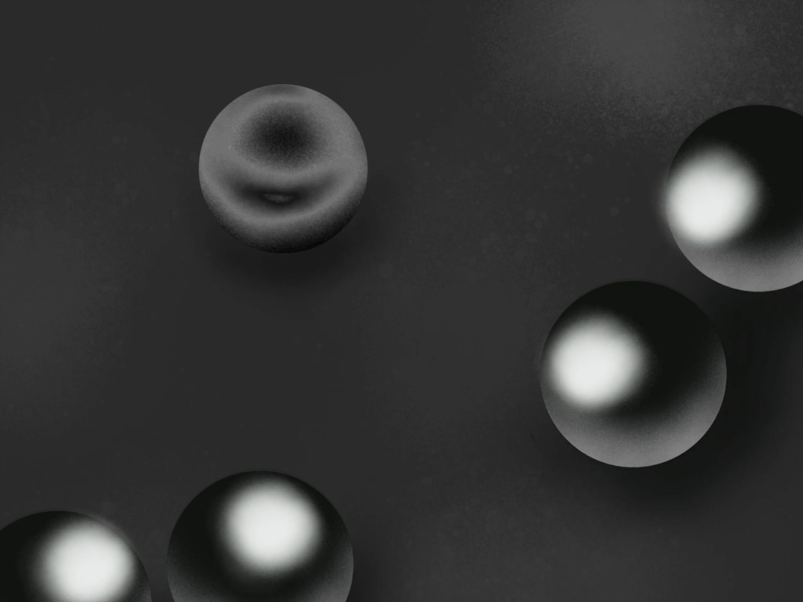

Second Best
Medium:
Dimension:
Finishing Date:
Duration:
0′ 37″ Animation
1440px × 1080px
2020.5
6 Weeks
This stop motion animation project is an exploration of the themes of originality and self-worth, with a focus on expressing one's inner thoughts and choices. To convey the narrative in a thought-provoking manner, symbolic elements like pearls and eyes are employed to represent individuals engaged in introspection. The animation is intentionally presented in grayscale, enhancing the emotional impact by evoking a sense of introspection and reflection. Through this artful approach, the project delves into the depths of personal identity and the significance of embracing one's true self.
        